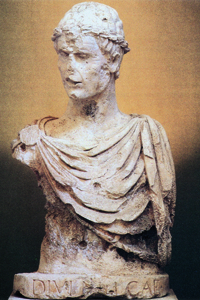
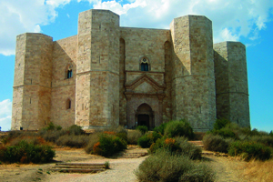
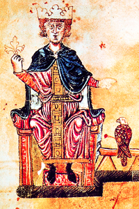

Lezione 7  Sacro romano impero
Sacro romano impero

-
290
635
-
270
600
-
205
490
-
230
460
-
260
505
-
370
470
-
120
400
-
-10
345

BARLETTA
La solennità dell’antichità classica convive con il realismo e l’eleganza della scultura gotica in questo splendido busto di Federico II, scolpito nel Duecento e conservato nel Museo Civico di Barletta.
CASTEL DEL MONTE
Imponente e quasi enigmatica nella sua compattezza, la mole di Castel Del Monte è il simbolo architettonico per eccellenza della splendida cultura che fiorì alla corte di Federico II.
L'AQUILA
Si deve a Federico II la fondazione della città de L’Aquila. La caccia con il falcone era il passatempo preferito di Federico II, al punto che l’imperatore stesso scrisse un trattato che ne spiegava la tecnica: in questa pagina vediamo l’addestramento degli uccelli illustrato nei ricchi colori di una miniatura contemporanea.ROMA
Papa Innocenzo III va considerato il più autorevole rappresentante della teocrazia papale.NAPOLI
Nel 1139 il Regno normanno del Sud Italia, chiamato regno di Sicilia, viene ufficialmente riconosciuto dal papato. Diviene la più grande potenza del Mediterraneo centrale. I re normanni assicurano un secolo di pacifica convivenza tra arabi, ebrei, greci, normanni e mercanti.PALERMO
Durante il regno di Federico II fioriscono in Italia le arti e le scienze. La Corte di Palermo diviene la culla della letteratura italiana. Federico fonda, nel 1224, l’università di Napoli, nel 1231 una nuova legislazione, che tuttavia viene applicata solo nel regno di Sicilia: le Costituzioni di Melfi (anche dette Liber augustalis) fondono le leggi del diritto romano con quelle normanne. Federico II sostiene la laicità del potere imperiale e dichiara che l’imperatore non dipende dal papa: colui che governa deve invece assicurare la pace e la giustizia, indipendentemente dalla religione professata.CORTENUOVA
Nel 1237 i Comuni italiani costituiscono una seconda Lega lombarda, sconfitta da Federico II nella battaglia di Cortenuova.GERMANIA
In Germania Federico fa ampie concessioni ai principi e ai vescovi tedeschi. In Italia del Sud deve domare le ribellioni dei baroni normanni e delle comunità saracene. Dopo Federico II il Sacro romano impero si trasforma nei fatti nel Sacro romano impero “di nazione tedesca”. Il titolo di imperatore del Sacro romano impero dura tuttavia ancora fino al 1806, quando Francesco d’Asburgo assume il titolo di imperatore d’Austria.